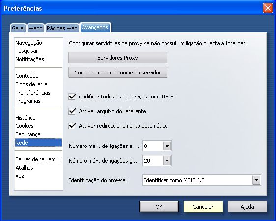
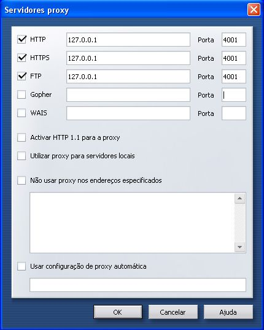

Configurações para Vários Browsers
Configuração do JAP para Opera
Para configurar o JAP para o browser Opera, siga os seguintes
passos:
1.) No menu "Ferramentas", escolha o submenu
"Preferências". Na nova janela aberta, escolha a categoria
"Rede"

2.) Agora pode mudar as configurações de servidor proxy.
Clique no botão "Servidores Proxy". Uma nova janela abre.
As seguintes definições devem ser mudadas::
Clique nas caixasClick HTTP, HTTPS, e FTP. Em cada um dos campos,
introduza o endereço de servidor "127.0.0.1". Introduza
"4001" na porta.

Nota: Se configurar uma porta de escuta diferente
no JAP, tem de introduzir também aqui essa porta, em vez da
4001.